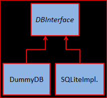

Lab 7: SQ Lite
Introduction
The aim of this lab is to gain experience of using SQLite with Android. You will begin by working with an existing App that works, but has some poor design in the code. During the lab you will redesign it to follow the DB Interface design discussed in the lecture: this separates all the DB specific code into special data-oriented classes and interfaces, with all data access going via an instance of a DB Interface class. This idea is conveyed in the UML diagram below:

App Score Stats
The example we’ll work through is using SQLite to store statistics on the score obtained each time a game is played - except that we’ll do this in the context of a dummy app where each score is simply generated by calling a random number generator.
In the lecture we discussed how it was good practice to put all the DB-specific code in separate classes, and to deal only with Java objects in the main App classes. A very significant benefit of this is the re-use that it brings. Once we’ve developed an App in this way, the DB-specific code can immediately be re-used in a different App - in fact, for any app when we need to record high-score statistics.
Sample Code
Begin by downloading and running the current app SQLiteActivity from .zip file here.
This is the version demonstrated in the lecture. Experiment with running the code. When run it should present the following buttons:
SQLiteTest
Check the operation of each one by monitoring the Log Cat using the string “SQLiteActivity Test:” as a filter.
Spend some time studying the code. It already contains a Score class and a ScoreDB interface, but these are currently not used.
ScoreDBInterface and Score are defined as follows:
ScoreDBInterface
Score class
The ScoreDBContract class is not really a contract, but just a list of all the column heading names used in the ScoreDB. By using these constants we can be sure to always call a column header (attribute) by its correct name.
ScoreDBContract
The interface definition is simple but useful: it shows all the ways in which the rest of the code in the app is allowed to interact with the database. Note that it implements an Android class called BaseColumns which has the following definition, providing standard names for _ID and _COUNT columns.
BaseColumns
We now move on to the main activity class, SQLiteActivity. The onCreate method performs some routine initialisation, calling a method to add some buttons and setting up the layout from an XML file.

SQLiteActivity onCreate
The addButtons method of SQLiteActivity has code of the following form, where an in-line handler is added for each button. The example shown is for the “create” button, but the others follow a similar pattern (though the code is more complex in some places).

Main Activity Add Buttons
The final class to study is the ScoreHelper class which extends the built in SQLiteOpenHelper class. This manages the connection with the database. It defines useful SQL strings that will be executed on the database, and has methods that use these Strings and construct others dynamically on demand to create tables and insert data etc. The methods for creating a table and adding an entry are shown below. Note how they take an SQLiteDatabase object (db) as an argument passed from the calling activity.

Score Helper onCreate
ScoreHelper addEntry
In the addEntry method note how the ContentValues object is used as a map to store the required value for each column, which is then passed to the db.insert method.
Now you are familar with the code, attempt the following exercies.
Exercise: Sorting
Currently the score listing is not sorted. Change the SELECT statement to return the scores in descending order.
Exercise: DummyDB 1
Write a DummyDb implementation of the ScoreDB interface that stores all the Score objects in an ArrayList<Score>. This will operate just like a real persistent implementation of the DummyDB, apart from the rather crucial aspect of not actually being persistent!
The most important methods to implement are the ones already declared in ScoreDB, but you can also add others corresponding to Create Table and Drop Table, so that every button on the GUI can be hooked up to do something.
After you’ve written the DummyDB class, write a separate DummyDBTest class the creates a DummyDB instance and calls each method to check it’s operation.
Exercise: DummyDB 2
Now rewrite the SQLiteActivity class to use an instance of ScoreDB instead of doing much of the DB-related work in line. See how much you can simplify this class by doing it this way.
Exercise: SQLiteDB
Now write an SQLite implementation of the ScoreDB interface. This can be based closely on the existing class ScoreHelper class, but will need some modification in order to match the ScoreDB interface.
In particular, note that the current version of ScoreHelper provides the db object, which is then passed back to it in method called such as addResult. This is unnecessary.
Exercise: Adding Dialogs
Currently all the print out from the App goes to the Log Cat. Change this so that each message goes to a Dialog which the use then has to dismiss to return to the main screen.
Exercise: Adding a service
This is your chance to use a service:
- Create an intentservice
- Download some file from the internet and push a notification
- Update a db record with the file downloaded
Summary
In this lab we took some existing SQLite demo code and refactored it and further developed it to show that appropriate structuring of the DB access code can lead to clean and easy to understand code which is also highly re-usable. Furthermore, the idea of using a dummy implementation of the database interface was also explored. This enables to the App to be tested quickly without relying on the real DB code which often takes more effort to develop.